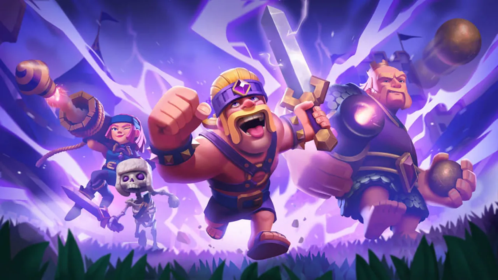

Novedades Sobre Clash Royale
Clash Royale estrena nueva actualización que, al contrario que muchas otras, viene cargada de bastantes novedades para el juego. Es cierto que, las actualizaciones en los últimos tiempo no han venido demasiado cargadas de novedades. Pero con la nueva actualización que han lanzado para Clash Royale la cosa cambia ya que llegan unas cuantas novedades bastante interesantes.
Estas son todas las novedades de la actualización de Clash Royale:
Comenzamos con las evoluciones de las cartas. Esta es una nueva mecánica para determinadas cartas, concretamente para los Bárbaros, el Gigante Noble, la Lanzafuegos y los Esqueletos. Las evoluciones implican que, una vez se lleve a cabo la misma usando la carta un número determinado de veces y acumulando elixir oscuro, las cartas mejoraran durante la partida con habilidades únicas.
Seguimos con el nuevo nivel 15, el cual será el nivel máximo y se llama nivel de élite. Y para conseguir este nivel en las cartas no hará falta oro, sino que harán falta comodines de élite, un nuevo objeto mágico que se podrá conseguir de diferentes formas. Este nuevo nivel se acompaña de nuevos niveles del rey, siendo el 70 el más alto y el máximo para la torre del rey será el 15.
Para conseguir lo anterior, también se ha ampliado en camino de trofeos. Se han añadido tres nuevas arenas diferentes con su propio diseño. Junto con ello, además, se ha vuelto a implementar la posibilidad de conseguir cofres y coronas en los eventos.
Por último, se añaden y modifican determinadas tareas de Maestría de las Cartas y se añade más oro, concretamente el triple, a los cofres. Todo lo anterior va acompañado de algunas mejoras y soluciones de errores para que el juego funcione a la perfección. ¿Qué os parecen las novedades de la nueva actualización de Clash Royale?